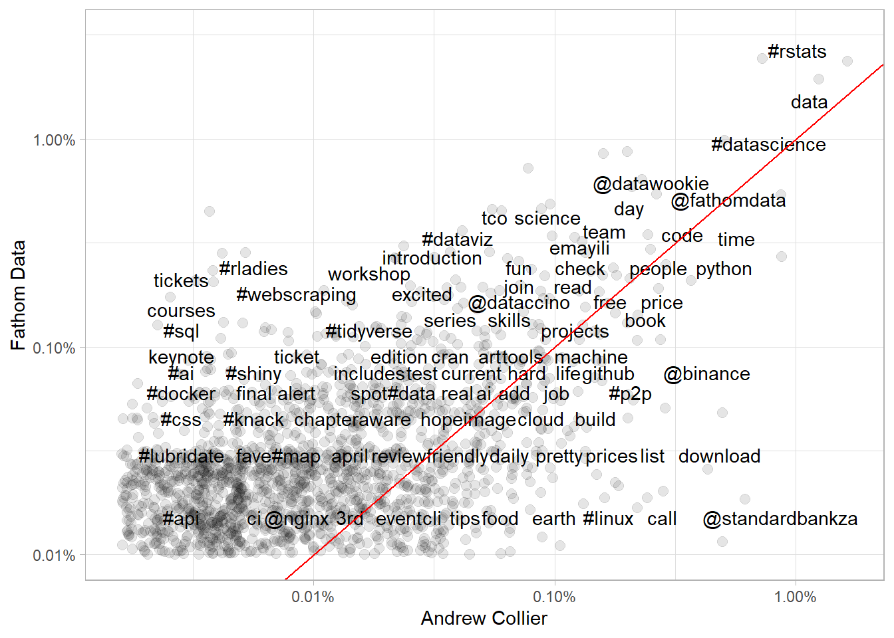
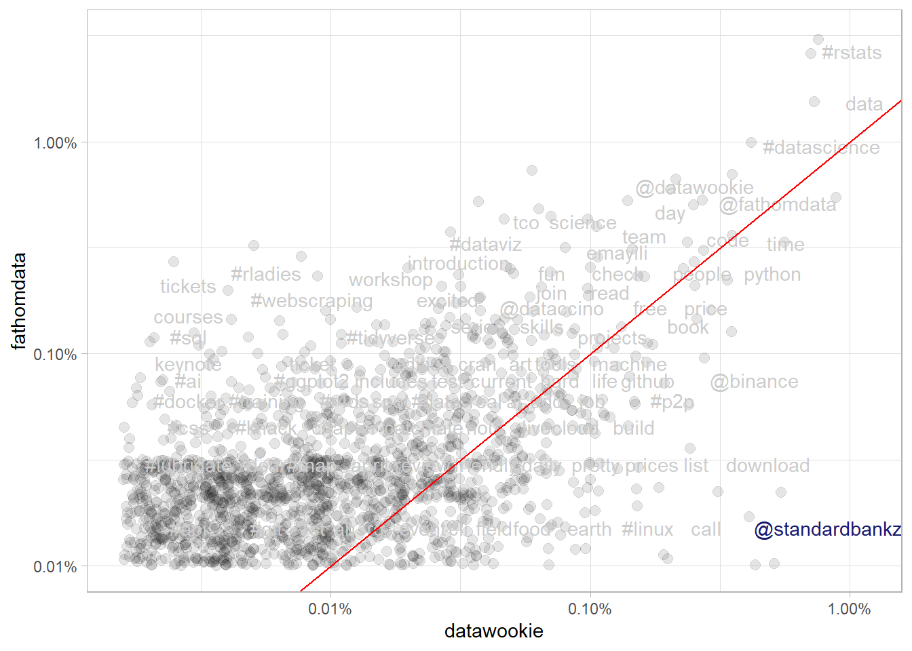

library(tidyverse)
library(rtweet)
# get the tweets!
df <- get_timelines(c("fathomdata", "datawookie"), n = 3200)R vs Python? R & Python!
Mining the twitter archive of Fathom Data
Which language does Fathom Data tweet about more?
Fathom data are an analytics and data science training firm which offers training in two of the most popular open source languages for statistical and general purpose programming: #Rstats and #Python. In their words:
We use 100% #opensource tools and we contribute to a number of Open Source projects. There's no doubt that Open Source adds value to @fathomdata, but it's hard to know what value we're creating. Some interesting perspectives on quantifying value.https://t.co/hcw5hylTwn
— Fathom Data (@fathomdata) January 24, 2022
Some of the staff state a preference for R, and I wanted to see if this preference was borne out in the tweets on their corporate twitter account.
Tweets!
To quantify the references to each language, I used the rtweet package from Michael W. Kearney to mine the Fathom Data timeline, as well as those of founder Andrew Collier.
We can see that we collected nearly 450 tweets on the Fathom Data account, and just shy of 3200 from Andrew’s account.
df %>%
count(screen_name) %>%
knitr::kable(col.names = c("Account", "Number of tweets"))| Account | Number of tweets |
|---|---|
| datawookie | 3198 |
| fathomdata | 448 |
Who is being retweeted?
In the table below we can see that several accounts which aggregate informative Rstats content feature in the top retweets on the Fathom Data feed. One of the reasons I love Rstats is that the community is so willing to share their knowledge. The Fathom Data feed is an example of this.
df %>%
filter(
str_detect(text, "rstats"),
screen_name == "fathomdata",
!is.na(retweet_screen_name)
) %>%
count(retweet_name, sort = T) %>%
slice_head(n = 12) %>%
knitr::kable(col.names = c("Accout name", "Number of retweets"))| Accout name | Number of retweets |
|---|---|
| Andrew B. Collier | 43 |
| R-bloggers | 19 |
| Megan Beckett | 16 |
| R posts you might have missed! | 10 |
| satRday South Africa | 6 |
| Mara Averick | 5 |
| Astrid Radermacher | 3 |
| RStudio | 3 |
| Tom Mock | 3 |
| Fathom Data | 2 |
| R-Ladies Cape Town | 2 |
| R Weekly Live | 2 |
We can also see that Fathom founder Andrew Collier appears at the top of the list of Rstats retweets from the Fathom account, with 43. The next section looks at how his feed and the Fathom Data feed overlap.
What is the overlap between private and public?
Following the fantastic resource Text Mining with R the code chunk below calculates the frequency with which each word used in the tweets of the Fathom Data accound and by Andrew Collier as a share of the total number of distinct words used.
# taking out URLs
remove_bits <- "&|<|>"
tidy_tweets <- df %>%
filter(!str_detect(text, "^RT")) %>%
mutate(text = str_remove_all(text, remove_bits)) %>%
unnest_tokens(word, text, token = "tweets") %>%
# remove stopwords
filter(
!word %in% stop_words$word,
!word %in% str_remove_all(stop_words$word, "'"),
str_detect(word, "[a-z]")
)
frequency <- tidy_tweets %>%
group_by(screen_name) %>%
count(word, sort = TRUE) %>%
left_join(tidy_tweets %>%
group_by(screen_name) %>%
summarise(total = n())) %>%
mutate(freq = n/total)
frequency <- frequency %>%
select(screen_name, word, freq) %>%
pivot_wider(names_from = screen_name, values_from = freq) %>%
arrange(desc(datawookie), fathomdata)The visualization below shows the relative frequencies for terms used by both accounts. Words near the red line are used in about equal proportion by the Fathom account and by Andrew, while words above the line are more specific to the Fathom account and words below the line are more specific to Andrew.
In the top right of the plot we can see that #datascience, data and #Rstats are used frequently by both accounts, and roughly in equal proportions. Terms like courses, #sql and keynote are more specific to the Fathom account, while #linux and binance are more specific to Andrew’s tweets.
frequency %>%
ggplot(aes(datawookie, fathomdata)) +
geom_jitter(alpha = 0.1, size = 2.5, width = 0.25, height = 0.25) +
geom_text(aes(label = word), check_overlap = TRUE, vjust = 1.5) +
scale_x_log10(labels = percent_format()) +
scale_y_log10(labels = percent_format()) +
geom_abline(color = "red") +
theme(legend.position = "none") +
labs(x = "Andrew Collier",
y = "Fathom Data")
Interestingly, standard bank stands out in the bottom right of the plot, highlighted in the version below. It seems that Andrew uses his personal account to call out poor customer service!
frequency %>%
mutate(highlight = word == "@standardbankza") %>%
ggplot(aes(datawookie, fathomdata)) +
geom_jitter(alpha = 0.1, size = 2.5, width = 0.25, height = 0.25) +
geom_text(aes(label = word, colour = highlight), check_overlap = TRUE, vjust = 1.5) +
scale_x_log10(labels = percent_format()) +
scale_y_log10(labels = percent_format()) +
geom_abline(color = "red") +
scale_color_manual(values = c("grey80", "midnightblue")) +
theme(legend.position = "none")
This is clearly the case! Have a look at the top terms, haha!
frequency %>%
filter(is.na(fathomdata)) %>%
select(-fathomdata) %>%
mutate(datawookie = scales::percent(datawookie)) %>%
slice_head(n = 10) %>%
knitr::kable(col.names = c("Word", "Relative specificity to Andrew Collier's tweets"))| Word | Relative specificity to Andrew Collier’s tweets |
|---|---|
| kak | 0.6723% |
| #customerservice | 0.6666% |
| @rainsouthafrica | 0.5759% |
| mind | 0.5220% |
| mbps | 0.4255% |
| prepared | 0.3773% |
| linux | 0.3489% |
| #itcanbe | 0.3262% |
| #fixit | 0.2354% |
| worst | 0.2241% |
Conclusion
It appears that Fathom has a good mix of open source languages in use, and on their twitter, with a slight skew towards Rstats.